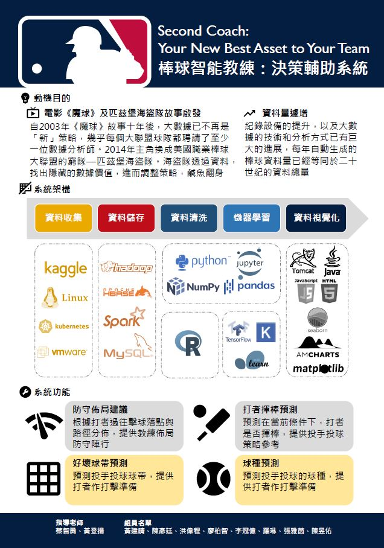

Alex Chen
AI Engineer, Big Data Engineer, Data Scientist
Hsinchu, TW
alexzalox@gmail.com
Skills
Statistics
90%
Python
90%
R
80%
Hadoop
70%
HTML/CSS
90%
JavaScript
70%
Bash
80%
Go Language
60%
Languages
Chinese
English
Taiwanese
Certificates
NASA International Space Apps Challenge Certificate
Academy Accreditation - Generative AI Fundamentals

TQC: Professional Techficiency Quotient Certification of Python 3

MTA: Introduction to ProgrammingUsing Python - Certified 2021

Education
Tze-Chiang Foundation of Science & Technology in National Tsing Hua University -Tcfst in NTHU
Feb 2021 - May 2021
Leader of MLB Big Data Project "Second Coach: Your New Best Asset to Your Team" 棒球智慧教練-決策輔助系統
National Cheng Kung University - NCKU
2008 - 2012
Projects
"Second Coach: Your New Best Asset to Your Team". 棒球智慧教練-決策輔助系統
What can our system do?
- Shift recommendations.
- Hitter swing prediction.
- Zone prediction：PitchFX zone number. Labeled as 1-9 for inside strikezone and 11-14 for outside strikezone. There is no 10. (from a pitcher's perspective).
- Pitch-type prediction.
System Structure
- Data Collection and Storage：Kaggle, VMware, Linux, K8s, Hadoop, Hive, HBase, Spark, Zookeeper, MySQL.
- Data Washed ：R, Python, Jupyter, Numpy, Pandas.
- Machine Learning ：Scikit-learn, Keras, Tensorflow, Feature engineering, Decision trees, Multivariate logistic regression, kNN,...etc.
- Visualization ：Matplotlib, Seaborn, AmCharts, Java, Tomcat, JavaScript, HTML, CSS.

Real-time information on PM2.5 in Taiwan
- Front-end：html、css、javascript、Bluma
- Back-end:(pandas、flask)、jupyter
- Automatically crawl every hour from the open government data platform, update the PM2.5 data of the whole Taiwan City, and use Bluma to design the webpage .
AI human image tracking
- jupyter notebook/openCV
- Use the readNetFromCaffe model in the deep learning DNN module for human body image recognition and tracking.
Fitness information website
- Designed a fitness website on github with html, css, javascript, git.
- website: https://alexzalox.github.io/gym-demo/ .
Mobile phone number Fortune Chinese-divination network
- Designed a website on github with html, css, javascript, jupyter.
- website: https://alexzalox.github.io/sogi-web-demo/ .
Mobile phone number Numerology western-divination network
- Designed a website on github with html, w3school, javascript, jupyter.
- website: https://alexzalox.github.io/luckyphone/ .
Work Experience
Leader of MLB Big Data Project / Tze-Chiang Foundation of Science & Technology
Feb 2021 - May 2021
"Second Coach: Your New Best Asset to Your Team". 棒球智慧教練-決策輔助系統 What can our system do?
- Designed and executed structured experiments to develop hitting and pitching prediction in MLB.
- Reduced 0.48 million rows of data using Datatable of R and Numpy, Pandas of Python.
- Built the Hadoop architecture under the kubernetes cluster using Linux using Bash Script to store the data(2.86 million of raw data).
- Trained artifact intelligence using Python and Jupiter to forecast pitching-zone and pitch-type with an 86% accuracy rate.
- Conducted XG-Boost algorithm using Scikit-Learn、Keras、Tensorflow to predict hitter swing and build shift recommendations system with a 74.6% accuracy rate.
- Using Matplotlib and Seaborn for chart visualization, we store the data converted into Json format into the database, and then use Tomcat, which supports Java, as the Web Server to connect the data, and uses jsp, Javascript, and html on the front end to conduct web pages visual presentation, providing users with real-time dynamic data display results.
Research Assistant / Ministry of Education, ROC (Taiwan)
Apr 2020 - Nov 2020
- The industry master class reviews enrollment and other related matters
- Audit project of m.o.e. about aboard students back to Taiwan due to Covid-19.
- Industry-University Cooperation Plan Special Class Review, Enrollment Regulations Approval, Fund
Appropriation and Write-off
- Subsidy operations for the technical excellence pilot program.
- Aboriginal technical and vocational education related business.
Research Assistant / National Taiwan Normal University
Jul 2017 - Sep 2019
- Web Site Link: DACC
- Go to schools on business and collect data of Diagnostic Assessment of Chinese Competence (DACC)
from
elementary school to university.
- Manage the back-end of DACC system.
- Web Site Link: SmartReading
- Proposition research and development project progress control, Text proofreading, Question database
management.
Quality Assurance Engineer / Gamesofa Inc.
Nov 2016 - Jun 2017
- Familiar with 【Web/Mobile】
- Mahjong games: Shen Lai Ye Mahjong, 13 Mahjong, Two Player Mahjong
- Poker games: Texas Hold'em, Big Old 2, 13, Solitaire, Fighting Landlord, Big D
- Shooting games: instant gun battle, Tank Hit tank battle, deadly gun battle
- Product activities and testing on various platforms, looking for bugs, vulnerabilities, errors, and confirming the problem recurrence process.
- Write bugs and suggestion reports after testing, provide relevant departments for modification communication, and continuous testing and verification.
- Collect relevant game data on the market.
- Support for project needs of other departments.
Project Manager, Librarian / Eslite
Mar 2015 - May 2016
- planning activities execution.
- Self-curated book exhibition on Mid-Autumn Festival. 中秋個人自策展
- Old School Life Proposal Book Fair. 老派生活提案展
- Shakespeare 400th Anniversary Book Fair. 莎士比亞400周年紀念書展
- Eslite Book Fair 2015 TOP100 Book Fair. 誠品2015年度TOP100書展
- Eslite Xinyi Forum personal self-curated book exhibition：Welcome to House of
Novels.
誠品信義Forum個人自策書展:歡迎來到小說家 - Responsible for the operation of commodities and library area.
- Adjustment of the combination of goods on the shelves and control of the sales situation.
- Commodity inventory management.
- Share performance evaluation and jointly create higher business goals
- Concerned about cultural trends, with sales creativity and goal attempts.